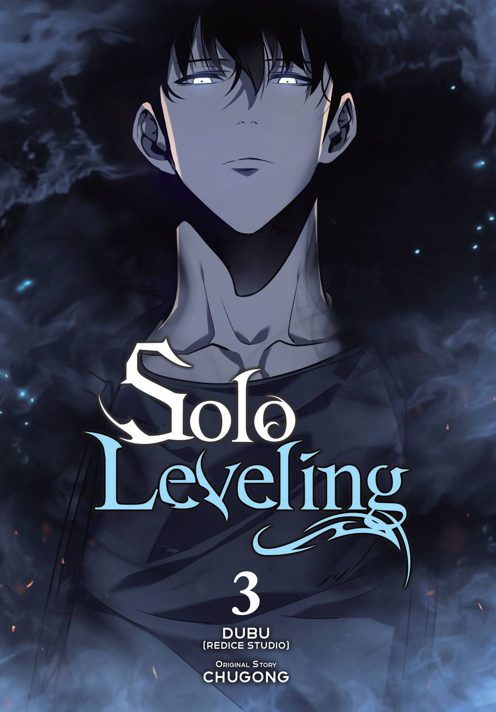

Solo Leveling
Capítulos: 179 (completo) | Género: Acción, Aventura, Fantasía
Sinopsis
En un mundo donde las "Puertas" conectan la Tierra con dimensiones llenas de monstruos, los cazadores con habilidades mágicas son los únicos capaces de sobrevivir en estas mazmorras. Sung Jin-Woo es el cazador más débil de todos, apodado "el cazador más patético". Tras quedar al borde de la muerte en una mazmorra doblemente difícil, despierta con un misterioso sistema que le permite subir de nivel… ¡como en un videojuego! Ahora, Jin-Woo comienza un viaje solitario de crecimiento, venganza y poder absoluto, mientras descubre los secretos ocultos tras las Puertas.
Autor
Chugong (historia) / Dubu (ilustraciones)
Tráiler oficial
Action
Adventure
Fantasy